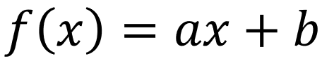
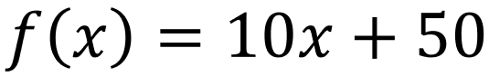
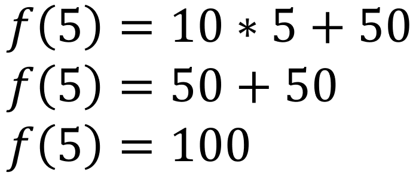
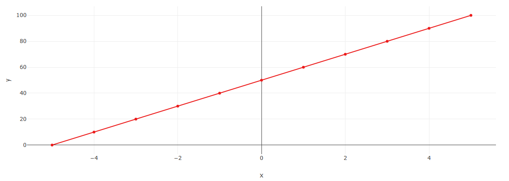

As funções afim são um tipo básico de função matemática que descreve uma relação linear entre duas variáveis. Elas são frequentemente utilizadas para modelar situações do mundo real, como crescimento econômico, velocidade de um objeto em movimento ou custo de produção.
Uma função afim tem a forma geral:
Onde "a" e "b" são constantes que determinam o comportamento da função.
A constante "a" é conhecida como coeficiente angular, e representa a taxa de variação da função. Ela indica o quão rápido a função cresce ou decresce. Se "a" for positivo, a função terá uma inclinação positiva, indicando crescimento. Por outro lado, se "a" for negativo, a função terá uma inclinação negativa, indicando decrescimento.
Vamos considerar um exemplo prático para ilustrar o conceito:
Suponha que você está vendendo camisetas personalizadas e deseja determinar o preço de venda com base no número de camisetas encomendadas.
Seja "x" o número de camisetas encomendadas e "y" o preço de venda. Podemos estabelecer uma função afim para representar essa relação:
Por exemplo, se um cliente encomendar 5 camisetas, podemos substituir o valor de "x" na função:
Portanto, o preço de venda para 5 camisetas seria de R$100,00
Podemos plotar essa função em um gráfico cartesiano, onde o eixo x representa o número de camisetas encomendadas e o eixo y representa o preço de venda. A função afim forma uma linha reta no gráfico, com inclinação positiva de 10 e interseção com o eixo y em (0,50).
As funções afim são úteis porque permitem prever e analisar comportamentos lineares em diversos contextos. Elas podem ser aplicadas em áreas como economia, física, engenharia, entre outras, para entender e modelar relações entre variáveis.